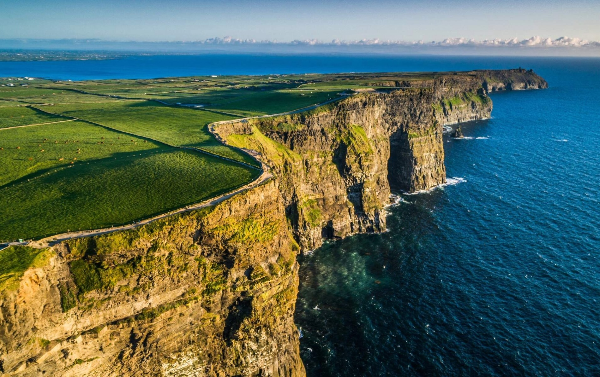

Ireland - Emerald Tales
From towering cliffs to mystical stones, a land of legends and song.

Cliffs of Moher
Dramatic cliffs overlooking the wild Atlantic, a place for dreaming and wandering.

Giant’s Causeway
Hexagonal stones formed by ancient lava flows, a marvel of nature and legend.
Cultural Spotlight
Ireland is a land of myths, music, and poetic landscapes. Legends of heroes, fairies, and ancient warriors flow through the rolling green hills. Traditional music, storytelling, and festivals preserve the Irish spirit.
Practical Tips
- Best time to visit: May–September for warmer weather and festival season.
- Must-pack items: waterproof jacket, walking shoes, and layered clothing.
- Experiences to dream of: Cliffs of Moher, Giant’s Causeway, castles, and lush countryside.
- Immersion: Immerse yourself in folklore and music to feel the heart of Ireland.